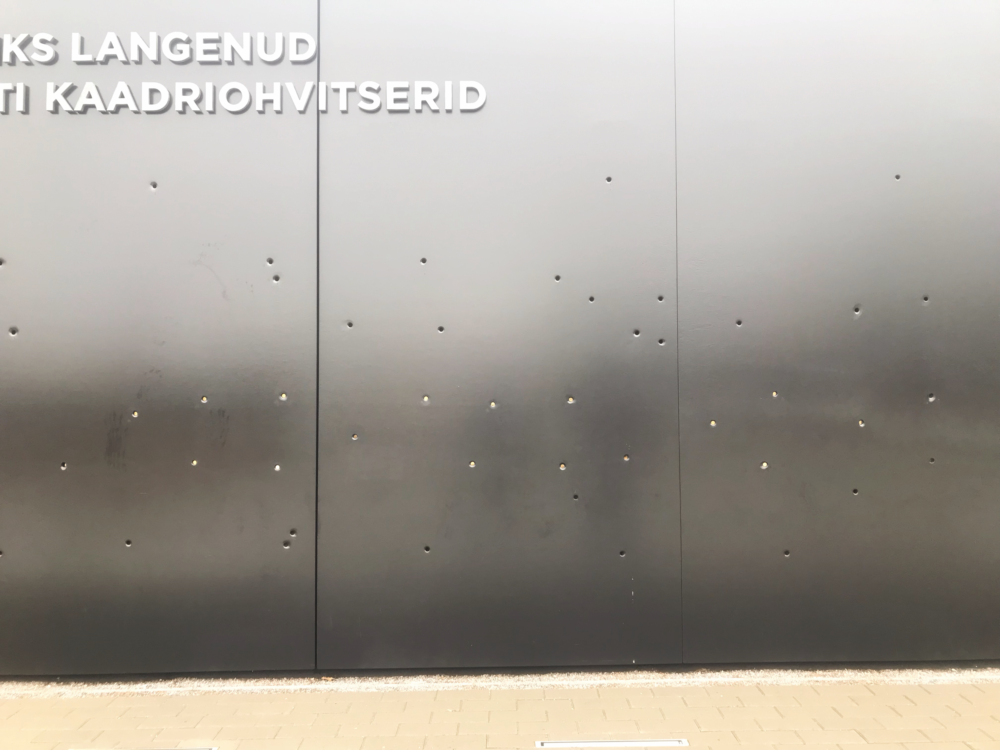

Мемориал жертвам коммунизма в Таллине
И тысячи падают в пыль дорог,
И тысячи мечутся вдоль дорог,
Сквозь муки, невзгоды, заботы
Находят знакомые соты.

В августе 2018 года в Таллине открыли мемориальный комплекс посвящённый жертвам советской оккупации Эстонии. За все время коммунистического режима было репрессивно около 50 тысяч человек, 22 тысячи было расстреляно или погибло в заключении. Каждый 5й житель Эстонии был так или иначе репрессирован.
Первая часть мемориала - «Путь». По обеим сторонам стены на плитах нанесены имена всех жертв коммунистического террора в Эстонии.
Вторая часть - «Сад». Стена, на которой застыли пчёлы, жизни жертв репрессий.
Расстрельная стена наверно самая сильная часть мемориала. Дырки от пуль на ней не просто так. Сразу за ними - фотографии погибших офицеров.
Эти все жертвы тоже были ради великой цели построить мировой коммунизм?